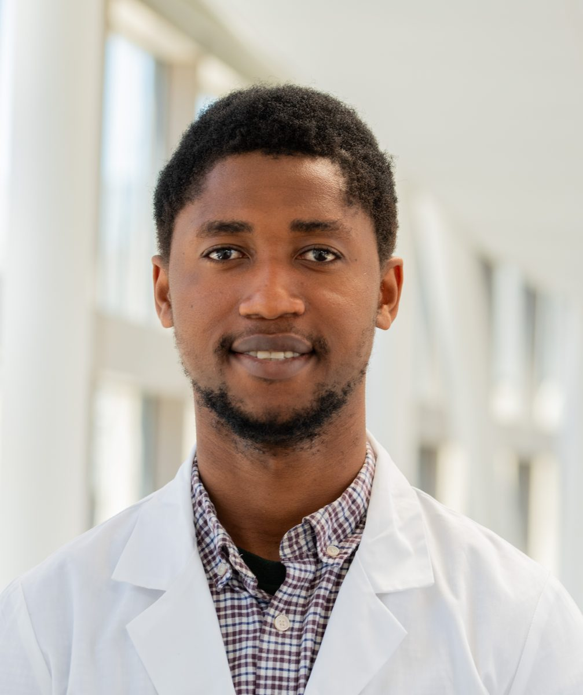
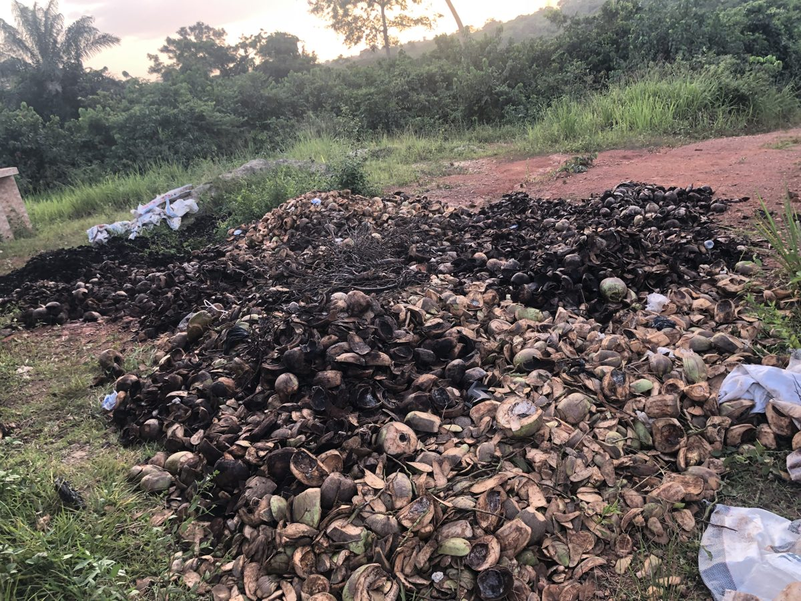
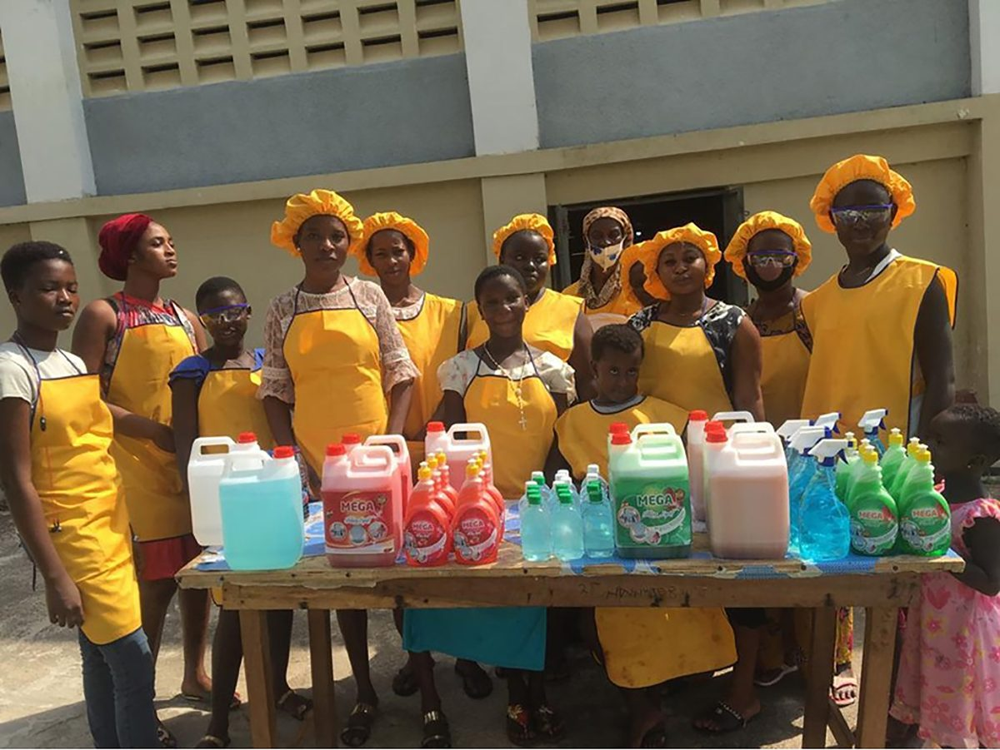

A
Amblyopia and strabismus
How the two eyes compete when one is weaker. I use dichoptic movies and visual search to measure suppression and to guide binocular treatment for children and adults.
Co-founder, Cocoa PotashPhD candidate, Biomedical Engineering, Case Western Reserve University
I grew up in a cocoa-farming family in Ghana, where the waste from every harvest was burned. I trained as a biomedical engineer, and I co-founded Cocoa Potash to recover the minerals in that waste and sell them to industry.

01
Co-founder, since 2022
Farms and forests leave mountains of residue behind. Most of it is burned or left to rot. Industry, meanwhile, mines the same minerals that waste contains, and then spends a great deal of energy to refine them.
Cocoa Potash recovers potassium carbonate and biochar from agricultural and forestry waste, with high-purity silica and calcium carbonate in development. There is no mining and no electrolysis, the process runs on biomass energy, and we reuse the CO2 it makes. Our buyers make soap, cosmetics, pharmaceuticals, food ingredients, glass and fertilizer.
We started with cocoa pod husk in Ghana, where about ten tons of husk are left for every ton of cocoa beans. The same process now works on more than a dozen feedstocks, from wood ash to corn stover.




02
Vision neuroengineering
My PhD uses eye movements as a window into the brain. I build experiments and analysis tools that turn how people look and see into objective measures of disease and treatment.
Since 2022 I have worked between the Cole Eye Institute at Cleveland Clinic and the Louis Stokes Cleveland VA Medical Center, with Dr. Fatema Ghasia and Dr. Aasef Shaikh. I designed or rebuilt the experimental setups and analysis behind most of the lab’s active studies, and I work with neurologists, neurosurgeons and ophthalmologists on each one.
A
How the two eyes compete when one is weaker. I use dichoptic movies and visual search to measure suppression and to guide binocular treatment for children and adults.
B
How stimulation of the subthalamic nucleus changes eye alignment, vergence, visual search and depth perception. Every patient is tested with stimulation on and off in the same visit.
C
With collaborators, I built the calibration and analysis for iPad-based eye tracking, a step toward screening and monitoring in clinics and homes.
03
Selected
04
From Breman Asikuma to Cleveland

Prince and I both grew up in cocoa-farming families. His family lost a 15-acre farm to a fire that started with burning waste. We both came through KNUST as Mastercard Foundation Scholars, and we have been building together since 2022.
I studied biomedical engineering at KNUST, finished a master’s at Arizona State with a 4.00, and moved to Cleveland for my PhD. The habits are the same in the lab and in the company: measure carefully, build what works, and stay close to the people it is for.
English and Twi, fluent. French, learning.
05
I am happy to talk about fellowships, research collaborations, partnerships and the work itself.